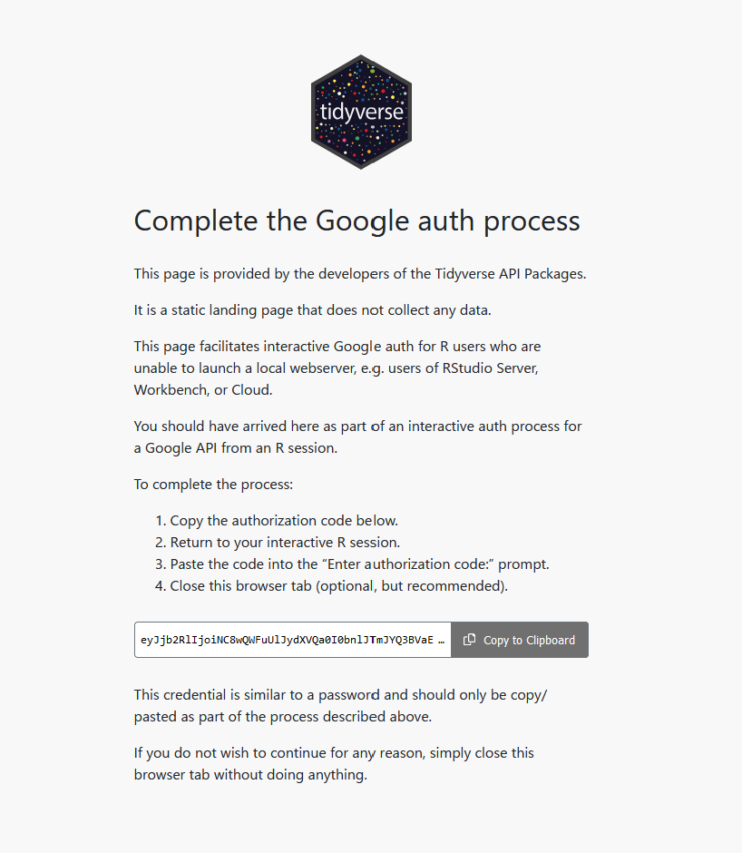

board <- board_gdrive("https://drive.google.com/drive/u/0/folders/1F3T0SUmdKBrYUvo180KqBf00yoRrzPdP")はじめに
pinsというパッケージをご存じでしょうか。pinsは、Rでデータやオブジェクトを簡単に共有・保存・再利用するためのパッケージです。
このパッケージでは、Google Driveなど、様々なツールと連携してデータを管理することができます。
これまでの記事1ではDVCを用いた方法を紹介してきましたが、特にGoogle Cloud projectを使用しなければならなくなって以降、正直めんどくさいです。
ここではなるべく簡単にデータを管理、共有できるツールとしてpinsをご紹介します。
設定
早速設定です。インストールされていない場合、以下のコードでパッケージをインストールしてください。Tidyverseを使っている場合は、googledriveはインストール済みです。
# install.packages("pak")
pak::pak(c("pins", "googledrive"))
Tip
余談ですが、最近はパッケージのインストールにpak::pak()をメインで使用しています。pak::pak()は
A Fresh Approach to R Package Installation
であり、install.packages()とdevtools::install_github()を兼ね合わせています2。ミーハーな僕としては使わずにはいられません。
続いて以下のコードでドライブと連携します。ブラウザ上でデータを保存したいフォルダを作成し、URLをコピーしておいてください。その後、以下のコードのリンク部分を置き換えて実行します。
このコマンドを実行すると、
Is it OK to cache OAuth access credentials in the folder ~/.cache/gargle between R sessions?
1: Yes
2: Noと出てくると思いますが、基本的に1を打って実行でいいと思います。これでセッションが切れても（RStudioを再起動しても）認証が継続されます。共用のPCなどの場合は2になると思いますが。
続けてブラウザでGoogleに認証を求められると思いますが、必要な権限を与え（チェックボックスにチェックを入れ）、次へと進んでいきます。
最後に以下の画面が出てきたら、下部のコードをコピーし、RStudioのコンソールに打ち込み、実行します。

これで認証は完了です。
データの管理
ピン留め
pinsでは、パッケージ名通りデータをピン留めすることができます。例えばデフォルトで入っているmtcarsデータを例に、データをフォルダにピン留めします。
board |>
pin_write(mtcars, "mtcars")Guessing `type = 'rds'`
Creating new version '20241223T131135Z-418c9'
Writing to pin 'mtcars'メッセージに出ている通り、デフォルトでは.rdsファイルとして保存されるようです。試しにhead()で行数を絞って、csvで保存してみます。その場合、
board |> pin_write(head(mtcars), "mtcars", type = "csv")Creating new version '20241223T131142Z-6a6e3'
Writing to pin 'mtcars'と、typeを指定してください。
読み込み
保存したデータを読み込みたい場合は、
board |> pin_read("mtcars") mpg cyl disp hp drat wt qsec vs am gear carb
1 21.0 6 160 110 3.90 2.620 16.46 0 1 4 4
2 21.0 6 160 110 3.90 2.875 17.02 0 1 4 4
3 22.8 4 108 93 3.85 2.320 18.61 1 1 4 1
4 21.4 6 258 110 3.08 3.215 19.44 1 0 3 1
5 18.7 8 360 175 3.15 3.440 17.02 0 0 3 2
6 18.1 6 225 105 2.76 3.460 20.22 1 0 3 1で可能です。
バージョン管理
ちなみに、バージョン管理も可能です。まずはpin_versions()でバージョンを確認します。
board |> pin_versions("mtcars")# A tibble: 2 × 3
version created hash
<chr> <dttm> <chr>
1 20241223T131135Z-418c9 2024-12-23 22:11:35 418c9
2 20241223T131142Z-6a6e3 2024-12-23 22:11:42 6a6e3上はmtcarsの全データ、下はhead()を適用したデータです。
現在は下のデータで上書きされている状態ですが、ここでやはり全データを読み込みたいとします。
その場合、以下のようにして読み込みます。
board |>
pin_read("mtcars", version = "20241223T131135Z-418c9") |>
tibble::as_tibble()# A tibble: 32 × 11
mpg cyl disp hp drat wt qsec vs am gear carb
<dbl> <dbl> <dbl> <dbl> <dbl> <dbl> <dbl> <dbl> <dbl> <dbl> <dbl>
1 21 6 160 110 3.9 2.62 16.5 0 1 4 4
2 21 6 160 110 3.9 2.88 17.0 0 1 4 4
3 22.8 4 108 93 3.85 2.32 18.6 1 1 4 1
4 21.4 6 258 110 3.08 3.22 19.4 1 0 3 1
5 18.7 8 360 175 3.15 3.44 17.0 0 0 3 2
6 18.1 6 225 105 2.76 3.46 20.2 1 0 3 1
7 14.3 8 360 245 3.21 3.57 15.8 0 0 3 4
8 24.4 4 147. 62 3.69 3.19 20 1 0 4 2
9 22.8 4 141. 95 3.92 3.15 22.9 1 0 4 2
10 19.2 6 168. 123 3.92 3.44 18.3 1 0 4 4
# ℹ 22 more rowsversion引数に、上で出てきたバージョンをペーストしてやれば可能です。
まとめ
今回はpinsパッケージを使ったデータ管理の方法についてご紹介しました。
Google Driveは多くの人がアカウントを所持しているため、アカウント設定に時間を割かなくてよい点が魅力的だと思います。
僕が思う良い点としては、直接Google Driveにデータが保存されるため、PCの容量を食わなくていいことがあると思います。
ぜひ使ってみてください。
番外編
ちなみに今回はGoogle Driveでご紹介しましたが、Dropbox等でも可能です。
board <- board_folder("~/Dropbox")Dropboxのパスは環境によって異なると思いますが、Dropboxでの共有設定をしておき、各自そのフォルダへのパスを設定しておけば、Dropboxでもpinsを使うことができます。
Dropboxユーザーの方は是非お試しあれ。